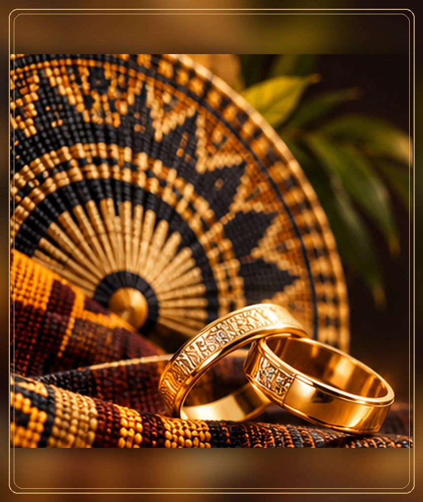
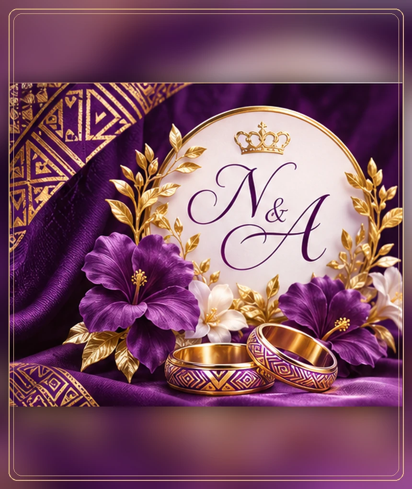

01 — L’ÉTERNEL✦
01 — L’ÉTERNEL✦IVOIRE · OR · CRAMOISI
L’enveloppe rouge
La délicatesse d’une lettre scellée, révélée au cœur d’une célébration majestueuse.
COLLECTION SIGNATURE · MARIAGES COUTUMIERS
Trois histoires, trois univers visuels et une même promesse : une invitation personnelle qui s’ouvre comme un cadeau. Les invités et les tables sont personnalisables dans le navigateur, sans installation.
01 — L’ÉTERNEL✦IVOIRE · OR · CRAMOISI
La délicatesse d’une lettre scellée, révélée au cœur d’une célébration majestueuse.

02 — NOTRE HISTOIRE♡NUIT · BRONZE · RUBIS
Un battement, une émotion, puis toute une histoire dévoilée comme une scène de cinéma.

03 — NOS RACINES❀VIOLET · LAVANDE · ROUGE
Une rose écarlate qui s’épanouit pour célébrer la rencontre de deux familles.
Les couples, dates et invités de ce catalogue sont fictifs. Photographies à usage d’illustration ; remplace-les par les images des mariés avec leur accord. Le RSVP n’est pas centralisé sans serveur : la réponse peut être transmise à l’organisation par WhatsApp.